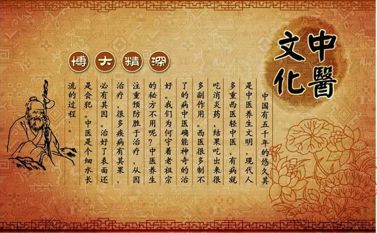
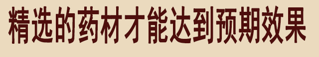
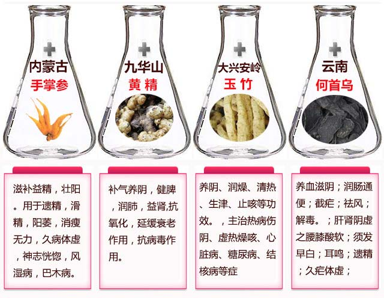

现在社会，节奏快、压力大，十个男人九个虚，力不从心的男人十分普遍，盲目进补的特别多，这点非常让人担心：“人参是好东西，用的巧能起死回生，用不好也能让人一命呜呼，不同的男人不同的补法，就像过去的油灯，灯不亮了，有的是没油了要加油，而有的油是满的，只需要把灯芯拔一拔！你是肾的问题还是睾丸的问题，不能瞎补，弄不好就是吹灯拔蜡！” 早衰早泄，肾虚肾寒，前列腺，疲软无力.......这其实都是肾进入早衰的现象！想摆脱 早衰早泄，肾虚肾寒，前列腺，疲软无力的朋友们一定要仔细往下看
很多人不懂补肾壮阳。吃了各种各样的产品，用错方法白白遭了好多罪！
中医认为！肾为先天之本， 肾藏精，主生长发育：肾主藏精，以气为用，关系着人的生长发育。肾气盛衰直接关系到人的生长发育，乃至衰老的全过程，也关系着人的生殖能力！
肾是男人的命根子，肾也是女人健康美丽的总管家，控制着身体的内分泌，所以说，无论是男人还是女人，肾是人的先天之本！男人30岁之后，肾开始老化，而且早衰早泄的情况也出现了，大部分男性朋友采用的调理方法都不科学，早衰了，就服用一些激素产品，殊不知，这些都不能根除，而且长期使用对身体副作用都很大，千万别让这些激素把你的身体“掏空”，男人要想壮阳延时，补肾养气才是根本之道！
肾出问题了，从根源滋补肾，修复肾，才能真正解决问题，内调方能外养，肾健康了不光是延时壮阳好，人也会变的有精神！千万别急于求成走到误区：
误区1、在路边情趣店买假药吃：所有路边开的情趣店里买到口服的，里面全有激素，基本上就像电视里曝光的，里面全是“兽药”，把“兽药”给男人吃，长期这样下去，破坏人体细胞，还会对胃、脏器都有一定的损害，这些假药里面含激素太高，慢慢还会得骨质疏松。
误区2、吃保健品就能补肾壮阳：市场上的保健品基本都是炒作用的，基本上是没有什么功效，如果真有功效，国家为什么不给他批一个国药准字的批号，而是只给一个保健食品的批号，大家细想一下就明白了。
误区3、吃人参，锁阳，肉苁蓉等就能壮阳：民间一直都认为这些补品有很强大的补气补肾功效，其实不然。对于气血亏空的人来说，身体虚弱，无法全面吸收这些营养，导致虚不受补。而且血液匮乏跟不上气的运行，反而让人更加虚弱！
很多早衰早泄问题都是肾早衰引起的，根据病症的程度分成几个等级，这里也特地整理了一下！大家可以自查看看，要是符合其中的一项，说明身体已经向你拉响警报，该调理了！
1、 肾虚
肾亏虚，多数男性朋友有精神萎靡、腰膝酸软、体力不支，睡眠不佳（包括失眠、多梦、嗜睡）、性功能减退等症状。
2、 早泄
房事时间短，在性生活方面无法满足伴侣。患者多伴有焦虑、神疲力乏及肾虚症状。
3、 早衰
性生活时易出现中途疲软、射精无力、事后易疲劳等症状。甚至勃起困难，力不从心。
4、 前列腺问题
阴囊潮湿、瘙痒异味、尿频、尿急、尿无力、尿等待、尿分叉、尿滴沥、小便黄泡沫多，夜尿频。甚至出现尿痛，阴部坠胀、血尿等症状。
5、 短小
阴茎发育不完善，短小。不符合体型、年龄、包皮过长或有二次发育需求。
6、 备孕
正常男性备孕精子存活率60%以上，有死精、精子存活率低、精子活力不足、身体偏弱等。

男性朋友一定要注意！如果肾出现问题，一定要尽早调理，否则不仅会影响自己下半生的幸福，更会引发一系列危害，严重的甚至会影响下一代健康！ 千万别等到去了医院花了钱，费了时间，遭了罪，才后悔没早早调理！
在微信中搜索：
朋友圈分享些补肾壮阳的方法,
加微信获取指导：
(长按复制)
补肾壮阳问题各不相同，了解清楚各种病症的原因，才能对症滋补，从根源调理！
在整个生命过程中，正是由于肾中精气的盛衰变化，而呈现出生、长、壮、老、已的不同生理状态。人从幼年开始，肾精逐渐充盛。到了青壮年，肾精进一步充盛，乃至达到极点，体壮实，筋骨强健。而待到老年，肾精衰退，形体也逐渐衰老，全身筋骨运动不灵活，齿摇发脱，呈现出老态龙钟之象。打个比方，假使人是棵大树的话，肾就象大树的树根一样，根深方能叶茂，同样道理肾好身体才好。对生长发育障碍临床调研中，补肾是重要的方法之一；补肾填精又是延缓衰老的重要手段。
很多人都想知道怎么样才能彻底调理好肾，平时也吃些人参、锁阳、肉苁蓉什么的经常进补，怎么就不见效果呢？
“ 别以为吃人参、锁阳、肉苁蓉就补了肾，其实配方剂量都不讲究的乱补，效果还不如一只老母鸡！你这样漫无目的乱吃乱补，不光不对症，吃进去的食物也没法吸收掉。效果没法把握不说，反而浪费时间，拖重病情， 让肾气更加匮乏，加速肾早衰不说，还让身体越来越下滑！”
 因为肾虚，早衰早泄等问题困扰的朋友们
坚持下去会有有非常好的保养效果！
在微信中搜索：
朋友们知道吗？优选的材料才能配伍出好的东西！
那些精挑细选的手掌参、玉竹、黄精、何首乌等等
朋友圈里有分享
加微信获取指导：
(长按复制)
这个方子对早衰早泄的作用可大着呢：
1、早衰早泄、前列腺、肾虚、肾赛、精血不足、筋骨酸痛
这些症状都是由肾器官功能降低，衰老导致的 ！肾虚分肾阴虚和肾阳虚，要根据不同的症状做不同的调理。肾虚多为长期积累成疾，切不可因急于求成而用大补之品进补，或者用成份不明的补肾壮阳物物。应慢慢调理。所以每个客户都要了解情况，进行针对性的配伍，才能达到更好的效果，